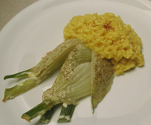

Safranrisotto
5,5 von 6zwiebeln und vialone reis in olivenoel andünsten. mit weisswein und gemüsebouillon ablöschen. ca. 25 min auf kleiner stufe köcheln lasen, regelmässig heisses wasser nachgiessen. ein gutsch rahm, parmesan und safran dazu geben, abschmecken. noch etwas butter rein, wenige minuten ziehen lassen. mit überbackenem fenchel servieren.
